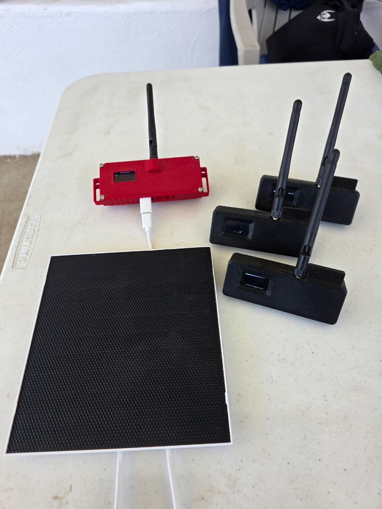

Galería Fotográfica del Proyecto

Sube el archivo con este nombre exacto en la misma carpeta del repositorio de GitHub para visualizarlo automáticamente aquí.
Escenario de Validación: Aldea Chajanel, Santa Marta, Sumpango
Sacatepéquez, Guatemala
Aldea Chajanel • Sector Santa Marta
Las pruebas de campo cuasi-experimentales se ejecutaron durante tres jornadas en el entorno rural de Chajanel, Aldea Santa Marta, municipio de Sumpango. El sitio fue seleccionado estratégicamente por representar la realidad crítica del país: laderas escarpadas, relieve volcánico, cobertura móvil nula y denso follaje boscoso que obstruye la primera zona de Fresnel.
Explorador de Mediciones Reales en Campo
Perfil de Enlace LoRa en Chajanel (500 m – 1.5 km)
Selecciona un punto de control radial desde el Nodo Central Solar:
Hardware Autónomo y Validación Inferencial
La red se ensambló con cuatro módulos T-Beam (ESP32 + Semtech SX1276 + GPS NEO-6M) con un costo base estimado de ~Q 620 por nodo, encapsulados para intemperie. Los tres nodos móviles integraron antenas GPS externas de 1 pulgada (TTFF verificado de 50–55 s) y baterías recargables Steren 18650 (2200 mAh), mientras el nodo central operó como Router solar sin GPS dedicado al 100 % a la retransmisión cifrada con AES-256.
Validación Inferencial de Latencia (n = 8 ensayos)
- ✓ ANOVA Unidireccional: F(3, 4) = 84.79, p < 0.001 (diferencias significativas entre distancias).
- ✓ Supuestos del Modelo: Normalidad (Shapiro-Wilk: W = 0.896, p = 0.266) y Homocedasticidad (Bartlett: T = 2.004, p = 0.572).
- ✓ Varianza Explicada (R²): El 96.1 % de la variabilidad de la latencia en el rango evaluado (500–1500 m) se explica linealmente por la distancia entre nodos (74/80 paquetes recibidos).
Equipo Investigador
Autores responsables del diseño, ensamblaje de hardware, despliegue en la aldea Chajanel y validación estadística del prototipo LoRa/Meshtastic.
Referencias Bibliográficas
-
1
Chapungo, N. J., & Postolache, O. (2025). Experimental evaluation of LoRaWAN connectivity reliability in remote rural areas of Mozambique. Sensors, 25(19), 6027. https://doi.org/10.3390/s25196027
-
2
Dionisio, R. P., Baldé, C., Domingos, L., Silva, A. P., Quinta-Nova, L., & Sebastião, J. R. (2026). LoRaWAN and Meshtastic for off-grid monitoring in challenging rural terrain: Field evaluation and simulation. Electronics, 15(23), 5445. https://doi.org/10.3390/electronics15235445
-
3
Lima, W. G., Lopes, A. V. R., Cardoso, C. M. M., Araújo, J. P. L., Neto, M. C. A., Tostes, M. E. L., Nascimento, A. A., Rodriguez, M., & Barros, F. J. B. (2024). LoRa technology propagation models for IoT network planning in the Amazon regions. Sensors, 24(5), 1621. https://doi.org/10.3390/s24051621
-
4
Lopes, I. R., Coelho, P. R. S. L., Pasquini, R., & Miani, R. S. (2025). Evaluating the performance of LoRa networks: A study on disaster monitoring scenarios. IoT, 6(1), 14. https://doi.org/10.3390/iot6010014
-
5
Meshtastic Project. (2025). Meshtastic documentation: Open-source off-grid LoRa mesh communication. https://meshtastic.org/docs/